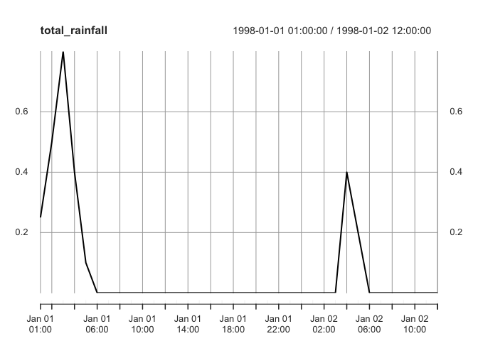
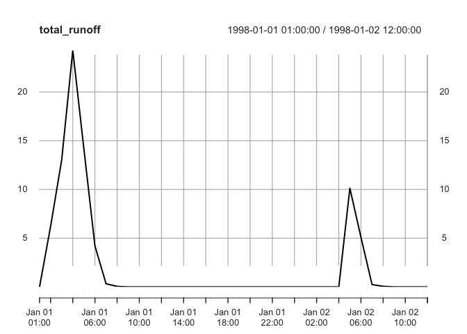
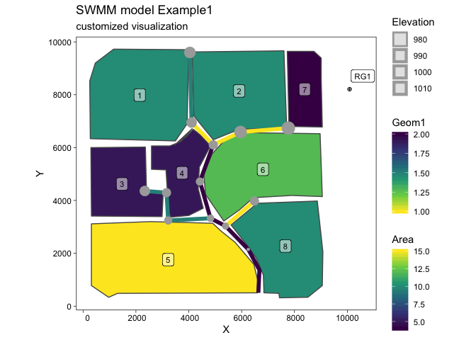

Functions to connect the widely used Storm Water Management Model (SWMM) of the United States Environmental Protection Agency (US EPA) to R with currently two main goals: (1) Run a SWMM simulation from R and (2) provide fast access to simulation results, i.e. SWMM’s binary ‘.out’-files. High performance is achieved with help of Rcpp. Additionally, reading SWMM’s ‘.inp’ and ‘.rpt’ files is supported to glance model structures and to get direct access to simulation summaries.
Installation
Installation is easy thanks to CRAN:
install.packages("swmmr")You can install the dev version from github with:
# install.packages("remotes")
remotes::install_github("dleutnant/swmmr")Documentation
Release: https://hsonne.github.io/swmmr
Development: https://hsonne.github.io/swmmr/dev
Example
This is a basic example which shows you how to work with the package. We use the example shipped with the SWMM5 executable.
Initiate a SWMM run and retrieve simulation results
library(swmmr)
library(purrr) # to conveniently work with list objects
# set path to inp
# If your operating system is Windows, the Example model files are usually
# located at "C:\Users\your user name\Documents\EPA SWMM Projects\Examples".
# For convenience the Example1.inp model is also included in the swmmr package.
inp_path <- system.file("extdata", "Example1.inp", package = "swmmr", mustWork = TRUE)
# glance model structure, the result is a list of data.frames with SWMM sections
inp <- read_inp(x = inp_path)
# show swmm model summary
summary(inp)
#>
#> ** summary of swmm model structure **
#> infiltration : horton
#> flow_units : cfs
#> flow_routing : kinwave
#> start_date : 01/01/1998
#> end_date : 01/02/1998
#> raingages : 1
#> subcatchments : 8
#> aquifers : 0
#> snowpacks : 0
#> junctions : 13
#> outfalls : 1
#> dividers : 0
#> storage : 0
#> conduits : 13
#> pumps : 0
#> orifices : 0
#> weirs : 0
#> outlets : 0
#> controls : 0
#> pollutants : 2
#> landuses : 2
#> lid_controls : 0
#> treatment : 0
#> *************************************
# for example, inspect section subcatchments
inp$subcatchments
#> # A tibble: 8 x 9
#> Name `Rain Gage` Outlet Area Perc_Imperv Width Perc_Slope CurbLen Snowpack
#> <chr> <chr> <chr> <int> <int> <int> <dbl> <int> <lgl>
#> 1 1 RG1 9 10 50 500 0.01 0 NA
#> 2 2 RG1 10 10 50 500 0.01 0 NA
#> 3 3 RG1 13 5 50 500 0.01 0 NA
#> 4 4 RG1 22 5 50 500 0.01 0 NA
#> 5 5 RG1 15 15 50 500 0.01 0 NA
#> 6 6 RG1 23 12 10 500 0.01 0 NA
#> 7 7 RG1 19 4 10 500 0.01 0 NA
#> 8 8 RG1 18 10 10 500 0.01 0 NA
# run a simulation
# the result is a named list of paths, directing
# to the inp, rpt and out-file, respectively.
files <- run_swmm(inp = inp_path)
#> arguments 'minimized' and 'invisible' are for Windows only
# we can now read model results from the binary output:
# here, we focus on the system variable (iType = 3) from which we pull
# total rainfall (in/hr or mm/hr) and total runoff (flow units) (vIndex = c(1,4)).
results <- read_out(files$out, iType = 3, vIndex = c(1, 4))
# results is a list object containing two time series
str(results, max.level = 2)
#> List of 1
#> $ system_variable:List of 2
#> ..$ total_rainfall:An 'xts' object on 1998-01-01 01:00:00/1998-01-02 12:00:00 containing:
#> Data: num [1:36, 1] 0.25 0.5 0.8 0.4 0.1 ...
#> Indexed by objects of class: [POSIXct,POSIXt] TZ: GMT
#> xts Attributes:
#> NULL
#> ..$ total_runoff :An 'xts' object on 1998-01-01 01:00:00/1998-01-02 12:00:00 containing:
#> Data: num [1:36, 1] 0 6.22 13.03 24.25 14.17 ...
#> Indexed by objects of class: [POSIXct,POSIXt] TZ: GMT
#> xts Attributes:
#> NULL
# basic summary
results[[1]] %>% invoke(merge, .) %>% summary
#> Index total_rainfall total_runoff
#> Min. :1998-01-01 01:00:00 Min. :0.00000 Min. : 0.0000
#> 1st Qu.:1998-01-01 09:45:00 1st Qu.:0.00000 1st Qu.: 0.0000
#> Median :1998-01-01 18:30:00 Median :0.00000 Median : 0.0000
#> Mean :1998-01-01 18:30:00 Mean :0.07361 Mean : 2.1592
#> 3rd Qu.:1998-01-02 03:15:00 3rd Qu.:0.00000 3rd Qu.: 0.1033
#> Max. :1998-01-02 12:00:00 Max. :0.80000 Max. :24.2530
# basic plotting
results[[1]] %>% imap( ~ plot(.x, main = .y))
#> $total_rainfall
#>
#> $total_runoff
# We also might be interested in the report file:
# use read_rpt to get is a list of data.frames with SWMM summary sections
report <- read_rpt(files$rpt)
# glance available summaries
summary(report)
#> Length Class Mode
#> analysis_options 2 tbl_df list
#> runoff_quantity_continuity 3 tbl_df list
#> runoff_quality_continuity 3 tbl_df list
#> flow_routing_continuity 3 tbl_df list
#> quality_routing_continuity 3 tbl_df list
#> highest_flow_instability_indexes 2 tbl_df list
#> routing_time_step_summary 2 tbl_df list
#> subcatchment_runoff_summary 9 tbl_df list
#> subcatchment_washoff_summary 3 tbl_df list
#> node_depth_summary 8 tbl_df list
#> node_inflow_summary 9 tbl_df list
#> node_flooding_summary 7 tbl_df list
#> outfall_loading_summary 7 tbl_df list
#> link_flow_summary 8 tbl_df list
#> conduit_surcharge_summary 6 tbl_df list
#> link_pollutant_load_summary 3 tbl_df list
#> analysis_info 1 tbl_df list
# convenient access to summaries through list structure
report$subcatchment_runoff_summary
#> # A tibble: 8 x 9
#> Subcatchment Total_Precip Total_Runon Total_Evap Total_Infil Total_Runoff_De…
#> <chr> <dbl> <dbl> <dbl> <dbl> <dbl>
#> 1 1 2.65 0 0 1.16 1.32
#> 2 2 2.65 0 0 1.21 1.32
#> 3 3 2.65 0 0 1.16 1.32
#> 4 4 2.65 0 0 1.16 1.32
#> 5 5 2.65 0 0 1.24 1.31
#> 6 6 2.65 0 0 2.27 0.26
#> 7 7 2.65 0 0 2.14 0.26
#> 8 8 2.65 0 0 2.25 0.26
#> # … with 3 more variables: Total_Runoff_Volume <dbl>, Total_Peak_Runoff <dbl>,
#> # Total_Runoff_Coeff <chr>Visualisation of model structure
With help of packages ‘ggplot2’ and ‘sf’ we can easily plot entire swmm models. Note that ggplot2 (>= 2.2.1.9000) is required, which provides the geometric object geom_sf().
library(ggplot2)
# initially, we convert the objects to be plotted as sf objects:
# here: subcatchments, links, junctions, raingages
sub_sf <- subcatchments_to_sf(inp)
lin_sf <- links_to_sf(inp)
jun_sf <- junctions_to_sf(inp)
rg_sf <- raingages_to_sf(inp)
# calculate coordinates (centroid of subcatchment) for label position
lab_coord <- sub_sf %>%
sf::st_centroid() %>%
sf::st_coordinates() %>%
tibble::as_tibble()
#> Warning in st_centroid.sf(.): st_centroid assumes attributes are constant over
#> geometries of x
# raingage label
lab_rg_coord <- rg_sf %>%
{sf::st_coordinates(.) + 500} %>% # add offset
tibble::as_tibble()
# add coordinates to sf tbl
sub_sf <- dplyr::bind_cols(sub_sf, lab_coord)
rg_sf <- dplyr::bind_cols(rg_sf, lab_rg_coord)
# create the plot
ggplot() +
# first plot the subcatchment and colour continously by Area
geom_sf(data = sub_sf, aes(fill = Area)) +
# label by subcatchments by name
geom_label(data = sub_sf, aes(X, Y, label = Name), alpha = 0.5, size = 3) +
# add links and highlight Geom1
geom_sf(data = lin_sf, aes(colour = Geom1), size = 2) +
# add junctions
geom_sf(data = jun_sf, aes(size = Elevation), colour = "darkgrey") +
# finally show location of raingage
geom_sf(data = rg_sf, shape = 10) +
# label raingage
geom_label(data = rg_sf, aes(X, Y, label = Name), alpha = 0.5, size = 3) +
# change scales
scale_fill_viridis_c() +
scale_colour_viridis_c(direction = -1) +
# change theme
theme_linedraw() +
theme(panel.grid.major = element_line(colour = "white")) +
# add labels
labs(title = "SWMM model Example1",
subtitle = "customized visualization")
Contributions
With the release of swmmr 0.9.0, the latest contributions and other code that will appear in the next CRAN release is contained in the master branch. Thus, contributing to this package is easy. Just send a simple pull request. Your PR should pass R CMD check --as-cran, which will also be checked by Travis CI when the PR is submitted.
Code of condcut
Please note that this project is released with a Contributor Code of Conduct. By participating in this project you agree to abide by its terms.
Acknowledgments
This package has been mainly developed in the course of the project STBMOD, carried out at the Institute for Infrastructure, Water, Resources, Environment (IWARU) of the Muenster University of Applied Sciences. The project was funded by the German Federal Ministry of Education and Research (BMBF, FKZ 03FH033PX2).
The development of the R package was inspired by the work of Peter Steinberg. Also, it benefits from the Interface Guide of SWMM.
Citation
To cite ‘swmmr’ in publications, please use:
Dominik Leutnant, Anneke Döring & Mathias Uhl (2019). swmmr - an R package to interface SWMM Urban Water Journal DOI: 10.1080/1573062X.2019.1611889
A BibTeX entry for LaTeX users is
@Article{, author = {Dominik Leutnant and Anneke Döring and Mathias Uhl}, title = {swmmr - an R package to interface SWMM}, journal = {Urban Water Journal}, volume = {16}, number = {1}, pages = {68-76}, year = {2019}, publisher = {Taylor & Francis}, doi = {10.1080/1573062X.2019.1611889}, url = {https://doi.org/10.1080/1573062X.2019.1611889}, eprint = {https://doi.org/10.1080/1573062X.2019.1611889}, }